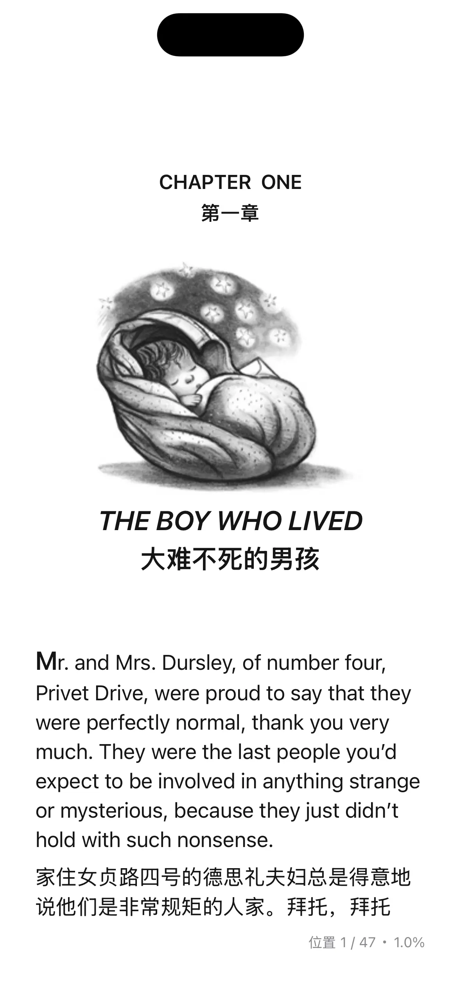

功能简介
全文翻译功能旨在帮助用户更轻松地理解外语书籍或文章内容。启用此功能后，系统会自动将段落文本翻译为中文，并在原文下方显示译文，无需手动查词或逐句翻译，大幅提升阅读效率。


使用限制
- 仅支持文本格式的书籍，不支持PDF文件。PDF文件可使用分屏翻译功能查看译文。
- 翻译质量依赖所选翻译引擎，部分专业术语或文学表达可能存在误差。
- 听阅版本需 >= 8.9.76。
如何开启
要启用全文翻译功能，请按照以下步骤操作：
- 打开您想要阅读的电子书。
- 点击屏幕顶部菜单栏的 ，进入全文翻译设置页面。
- 将开关滑动至“开启”状态，即可激活全文翻译功能。
选项说明
- 全文翻译引擎：可选择不同的翻译服务（如 AI、DeepL、Google、百度等）。系统版本 >= 18.0 的设备支持苹果翻译引擎，无需联网且不限额度。
使用场景
全文翻译功能可用于以下英语学习练习。
中译英练习
通过结合使用全文翻译与模糊文本功能，你可以高效地进行中译英翻译训练，提升语感与表达能力。打开书籍后，按照以下步骤进行练习：
启用全文翻译与模糊文本功能
开启“全文翻译”功能，在每段原文下方显示对应的中文译文。然后开启模糊文本功能，使英文原文处于模糊状态，并调整模糊强度保证英文原文不可见。先读中文，尝试回译成英文
在文本模糊的情况下，先阅读每段下方的中文译文，结合上下文进行推理，尝试将中文内容翻译回英文。这个过程锻炼你的理解能力与英文表达转化能力。揭示模糊原文，对照验证
思考后，点击模糊的英文原文区域，显示清晰文本。对照你脑中的“回译结果”与真实原文，判断理解是否准确，并找出词汇或表达上的差异。反复练习，强化语感
你可以将已显示的原文重新设为模糊，反复进行回译练习。通过多次练习，可以有效提升中译英的准确性和自然度，同时积累地道表达。
这种练习方式特别适合：
- 英语初中高级学习者希望提升翻译思维
- 有一定基础，想训练双语转换能力的用户
- 备考翻译考试或进行实战翻译训练的用户
分屏翻译
你可以通过启用“水平分屏”功能，将页面分为左右两栏：一侧显示原文，另一侧展示全文翻译。
由于 PDF 格式的限制，无法实现嵌入式的全文翻译功能。你可以使用“水平分屏”模式同步查看当前页的译文，对照阅读，提升理解效率。